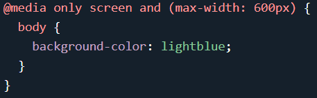
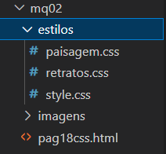

O que é uma consulta de mídia?
A Media Query é uma técnica CSS introduzida no CSS3.
Ele usa a @media regra para incluir um bloco de propriedades CSS somente se uma determinada condição for verdadeira.
Exemplo
Se a janela do navegador for de 600px ou menor, a cor de fundo será azul claro:
Você também pode ter diferentes folhas de estilo para diferentes mídias,primeiramente focando em mobile e depois fazendo folhas de estilo para outros tipos de dispositivos.
